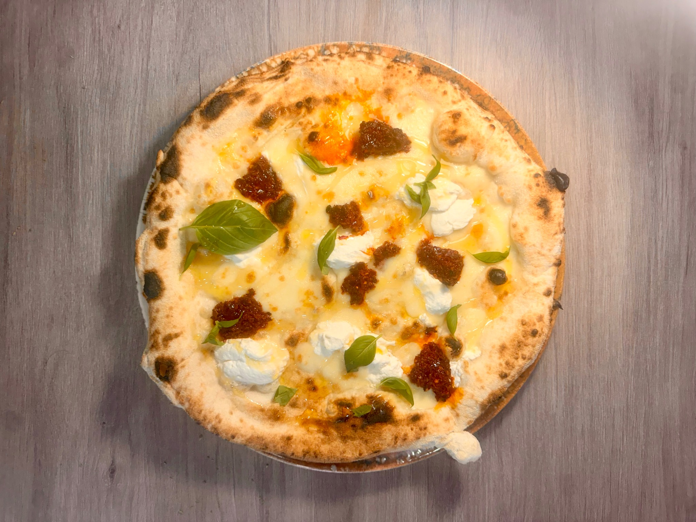

Auténtica napolitana
Margherita DOP
Tomate San Marzano, mozzarella fior di latte, parmigiano reggiano y albahaca.
En Panzzoni todo empieza con la masa. Harina, agua, levadura y tiempo.
La dejamos reposar antes de entrar en el horno de leña. Después llegan los ingredientes:
tomate San Marzano, mozzarella fior di latte, guanciale, burrata, pistacho.
Cosas sencillas, hechas con calma.
Aquí se viene a comer bien y a quedarse un rato más en la mesa.
Si la pizza llega a casa, un poco de horno y vuelve a salir bien.
Todo empieza antes del horno. La masa se prepara con tiempo y se deja reposar hasta que está lista para trabajarse. Ese descanso cambia su textura y hace que la pizza salga ligera y aireada.
Cuando entra en el horno de leña, todo ocurre rápido. El tomate se vuelve más intenso, la mozzarella se funde y el borde toma ese color que solo da el fuego.
Luego llega la mesa. Una pizza, una copa de vino y un rato para compartir.

Una selección visible desde el principio, para entrar, mirar y elegir con calma.
Tomate San Marzano, mozzarella fior di latte, parmigiano reggiano y albahaca.

Tomate San Marzano, mozzarella fundente, spinata picante y albahaca.

Fior di latte, burrata cremosa, mortadella de Bologna, pesto de pistacchio y pistacchio granulado.

Guanciale crujiente, provola affumicata, crema de carbonara y Parmigiano Reggiano.

Crema de trufa, provola affumicata, speck del Tirol y lascas de parmigiano.

Fior di latte, nduja calabresa, ricotta y miel.
Panzzoni Gijón y Panzzoni Santiago. La misma forma de trabajar, en dos hoteles distintos.